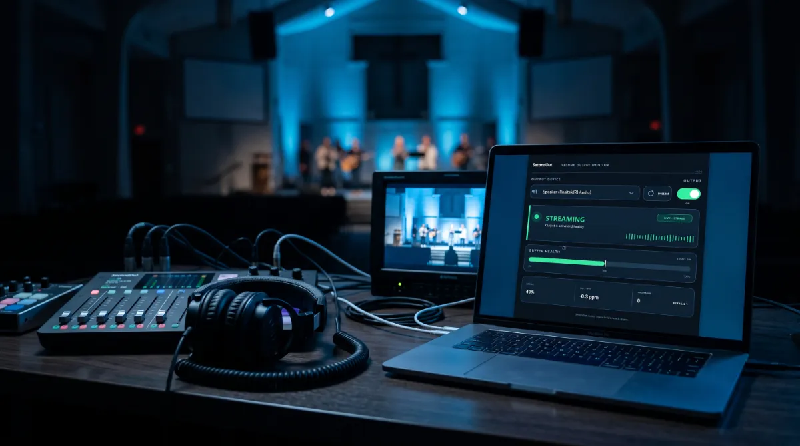
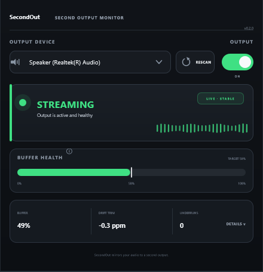
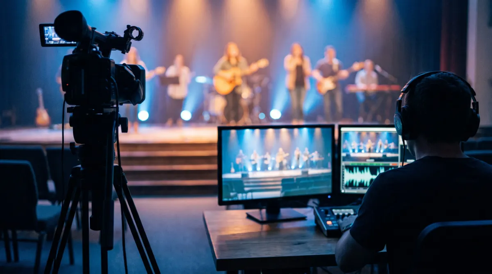

VST3 and Standalone · Windows and macOS
SecondOut
One master bus. Two independent outputs.
SecondOut sends your DAW's master bus to a second output device without touching your main audio interface. Stream your mix, feed a video switcher or record a safety copy, while your monitors keep working exactly as they do now.
$19 once · lifetime licence with one year of updates · version 1.3.3 · signed and notarized · installs through Amanorsac Hub

New in 1.3.3
Stream the Mix to a Phone
A free update for everyone who owns SecondOut. Open Amanorsac Hub on Windows or Mac and it will offer it to you.
Scan, Tap, Listen
Switch on Phone stream, scan the QR code with the phone's camera and tap Listen. The mix plays in the phone's browser over the same Wi-Fi. No app, no account, and no internet needed.
One Link per Mix
Every instance in the session can offer its own mix, so several busses can be on offer at once and each phone picks one. New link cuts everyone off the old one.
Made for Walking the Room
Delay is roughly 150 to 300 ms, so it suits checking a mix from the back of the room. It is not for lip-sync or in-ear monitoring. Phone stream is off until you switch it on.
Your Mix, in Two Places at Once
On Windows, ASIO drivers lock an audio interface to one program at a time. That is perfect for low latency recording, but it becomes a problem the moment you need the same mix somewhere else, such as a video switcher for a service, an encoder for a live stream, or a safety recording running alongside. Your DAW owns the interface, and nothing else can open it without stopping your session.
SecondOut solves that from inside the DAW. It sits on your master bus like any other plug-in and opens a second, independent connection to another device. Your interface stays exactly as you set it up, so there is no re-patching and no interruption.
Without SecondOut
Pick One Destination
Your DAW owns the interface. Nothing else can open it, not OBS, not a second console and not a hardware switcher, until you stop your session.
With SecondOut
Keep Both
Your monitors carry on through your interface as normal, and SecondOut sends the same mix out of a second device at the same time.
How It Works
It Takes the Signal Before ASIO Sees It
SecondOut is a plug-in, not a replacement driver. It reads the exact audio your DAW is about to send out, then handles the second device completely on its own.
1. Tap
Put it on the master bus. It copies the post fader mix you are hearing before it reaches your audio driver, so the second feed matches your monitors sample for sample.
2. Stream
It opens its own WASAPI connection to the second device in shared mode, so it never fights your interface or anything else for the device. Switching devices happens in the background and the window never freezes.
3. Correct
Your DAW and the second device run on separate clocks that drift apart. A servo loop adjusts the resampling by tiny fractions every second, so the buffer stays centred and you never hear it.
4. Route
On an interface with more than two outputs, choose the exact pair SecondOut uses. Run several copies at once, each on its own pair, to send different mixes to different places.

The Window
Built to Be Glanced At
SecondOut has one screen, and it answers one question instantly: is the feed healthy? The status reads streaming, buffering or a problem in letters you can see from across the room.
Buffer health shows the drift correction holding centre, so if it ever creeps toward an edge you see it long before it becomes a dropout. If a device disconnects or another program already has it open, SecondOut tells you which one and what to do next.
Anywhere One Mix Needs Two Destinations
SecondOut was built for the church media desk, where the room mix and the stream mix have to come from the same computer on the same morning. It works just as well anywhere else a mix has to be in two places.

Church and Live AV
Stream the Service Without Re-Patching
Send the mix to the streaming computer during the service without touching the console or your monitor path. When the service ends, nothing needs to be put back.
Broadcast
Feed a switcher or encoder from your DAW's master bus while your interface stays dedicated to monitoring.
Podcasts and Streams
Send your session into OBS or a capture app through a virtual cable, with no exclusive mode conflicts.
Safety Recording
Keep a parallel recording of the mix on a second device, away from your main signal chain.
Several Mixes
Run a few copies of SecondOut, each on its own output pair, to send different mixes to different destinations at once.
Tech Specs
Version
1.3.3
Formats
VST3 plug-in, plus a standalone app.
Platforms
Windows 10 and 11. macOS 11 and later.
Output Mode
WASAPI shared mode on Windows. The macOS build does the same job through the system's own audio.
Channels
Any selectable output pair on multi-output devices.
Buffer Window
About 400 ms.
Drift Correction
Servo loop, under 10 ppm.
Sample Rate
Matched automatically.
Your Interface
Never touched.
Licence
Lifetime licence, one year of updates. One key for up to two devices, managed from My Apps.
Signing
Signed on Windows, notarized on macOS.
Built With
JUCE. VST3 is a trademark of Steinberg Media Technologies GmbH.
Questions
Will it change how my audio interface works?
Can I use it with OBS?
Will the stream drift out of time over a long service?
Does the Mac version work the same way?
How many computers can I use it on?
SecondOut
$19
Bought once, for Windows and macOS. Install it through Amanorsac Hub and paste the licence key from your account into the plug-in. One key covers up to two devices.
How to Pay
In Ghana, pay with MTN MoMo. Everywhere else, pay by card.
Ghana · MTN MoMo
Pay at the studio's MoMo link, then send the screenshot.
- Open the link or scan the code. The request is to Stephen Amanor Sackey, 024 685 8947.
- Send the price of SecondOut. Not sure of the cedi amount? Ask on WhatsApp first.
- Send the screenshot to 024 685 8947 on WhatsApp with the app's name and the email of your account here. Your code comes back the same day and unlocks it in My Apps.

Everywhere Else · Card
Pay by card, or ask us anything first.
Use the Buy button above. It takes Visa, Mastercard and Apple Pay in US dollars, and SecondOut is in My Apps the moment it clears.
Questions before you buy? Scan the code and message the studio on WhatsApp.
Message on WhatsApp